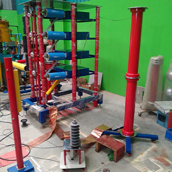
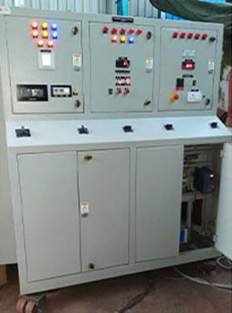
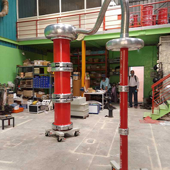

HTLS Test System consists of 100KN, 300KN UTS system and sheave cart system to perform Creep test, Stress-strain test, Heat cycle test, UTS test, linearity of expansion test and sheave test at ambient and elevated temperature.
Impulse Voltage Generator up to 1400 KV 140 Kilo Joules for Testing Switchgears, Power Transformers, etc and Impulse Current generator for testing Surge Arrester at nominal discharge current up to 10 Kilo Joules & 72 KV
Temperature Rise Kit to perform Temperature rise test on Different equipment like LT Panel, Tap Changers and Switchgears
Power Frequency Source up to 300 KV 300KVA to test all Electrical Equipment including Cables